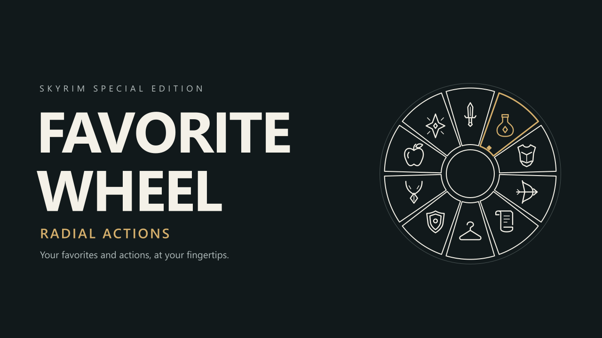

Categorized favorites and action wheels with I4 icons, combat cycles, editable outfit presets, keyboard/controller support, sorting, themes and built-in settings. No ESP or Papyrus scripts.
Favorite Wheel - Radial Actions
Your favorites and actions, at your fingertips.
Version 0.11.0
Replace Skyrim's Favorites menu with a categorized wheel for items and spells. Switch to an action wheel for combat presets, combat cycles and outfits. Supports keyboard, mouse and controller.
Features
- Favorites or full inventory — Nine categories with item details, equipped-hand indicators and native 1–8 shortcuts. Spells, shouts and powers remain favorites only.
- I4 icons — Use installed I4 rules and icon assets with Theme, I4 or Original colors, background rendering and optional disk caching. Install rule/icon mods separately; their artwork is not bundled.
- Sorting and dragging — Sort by name, equipment state, type or relevant stats, or arrange items with drag-and-drop across pages.
- Combat presets and cycles — Restore left/right equipment and Voice-slot shouts or powers. Organize presets into eight cycle groups with configurable shortcuts.
- Editable outfits — Save, edit, apply, rename, import and export armor, clothing and jewelry sets. Optional per-preset Skip missing items supports dynamically managed equipment; it is off by default.
- Your preferred pace — Pause, slow time or normal speed. Optionally move with the left stick while selecting with the right in live modes.
- Built-in settings — Appearance, Icons, Keyboard, Controller and Gameplay tabs; three themes, configurable bindings, wheel size and position, sounds and animations.
Install & start
Requires SKSE64, Address Library matching your game version, and Microsoft Visual C++ 2015–2022 x64 Redistributable. Install the ZIP with your mod manager and launch through SKSE. No ESP, Papyrus scripts, SkyUI or SKSE Menu Framework required.
Mark items or spells as favorites, then press Q. For carried items, choose F2 → Gameplay → Item source → All inventory → Apply. Keep your existing main INI and custom themes when upgrading. The ZIP does not include a main INI; Apply creates one when needed.
Default controls
- Q / Shift + Q — Open favorites / actions. R switches wheels.
- A / D — Change category. W / S or mouse wheel — Change page.
- Left click — Use or equip. Right click — Equip left where supported, or manage a preset.
- T / Shift + T — Cycle sorting / arrange items. Drag onto an occupied sector to move an item; scroll while holding to change pages.
- Hover + 1–8 — Assign or clear an item/combat-preset shortcut. Shift + 1–8 adds to combat cycles while open and cycles presets during gameplay.
- F2 — Settings. Esc / Tab — Close or return.
Controller: Favorites binding opens the wheel; LB + Favorites opens actions. Left stick selects; A uses/equips right, X equips left or manages presets. LB/RB change category, LT/RT equip left/right, D-Pad Up/Down changes pages, Y switches wheels, Start opens settings and B closes. Bindings are configurable.
Save your game after editing presets, shortcut assignments, cycles or custom ordering. These belong to the character's SKSE co-save; preserve the matching .skse file. Global settings use Apply. Back up saves before downgrading: older presets remain readable, but older plugin versions may reject newer records.
Compatibility & notes
- Tested in-game: Skyrim 1.5.97 and 1.6.1170. Supported but not yet tested in-game: 1.6.640, GOG 1.6.659 / 1.6.1179 and 1.7.99 / 1.7.104. Use matching SKSE and Address Library files. VR and other runtimes are unsupported.
- TNG slot 52: A candidate outfit fix is included through Skip missing items. Real TNG compatibility is awaiting reporter feedback.
- STB Hotkey System: Assign STB shortcuts through Inventory/Magic or the original Favorites menu; this wheel does not manage STB bindings.
- Upscalers: Reported visibility issues with PureDark Upscaler and Theo's Render Pipeline remain unresolved. Disable competing Favorites-menu replacements.
- Item use: Magic equips for normal casting. Books and ingredients cannot be directly used. Compatible favorited MISC instruments use the native equipment path. Vampire Lords have a restricted owned-skill wheel; werewolves use the vanilla Favorites menu.
Optional integrations: Face Lighting SKSE for player/NPC/follower lighting, and Skyrim Text Bridge for IME input in preset names. Neither is required.
Themes, languages & links
Themes: Classic Gold, Skyrim and Skyrim Polygon. Customize colors, materials, shape and icons through external theme files.
Languages: English, Simplified Chinese, French, Brazilian Portuguese, Russian, Japanese, Korean and German. System mode follows Windows with an English fallback; manual selection is available. Thanks to Ardios for the French base translation.
Theme guide · Icon packs · 0.11.0 changelog · Source & feedback
GPL-3.0-only. Third-party notices are in the source repository. Developed with AI assistance and hands-on testing.